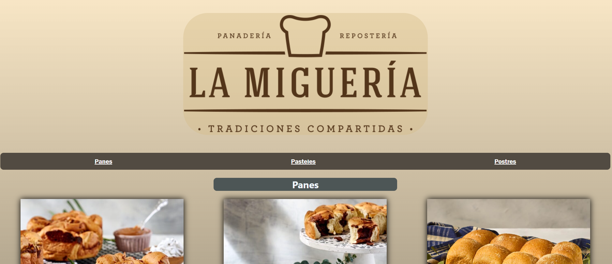
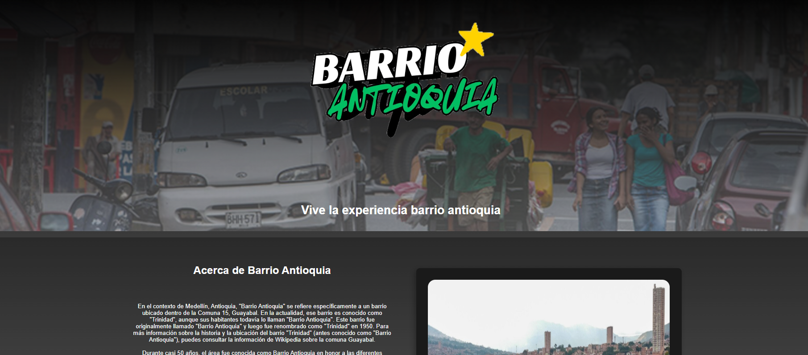
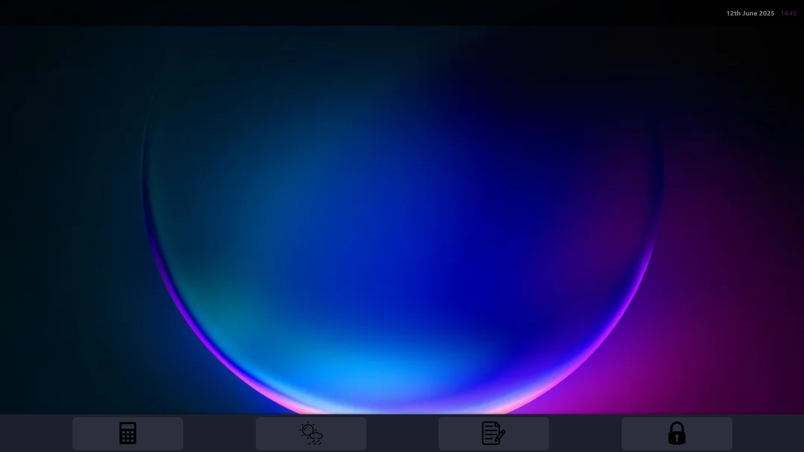
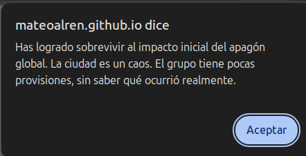
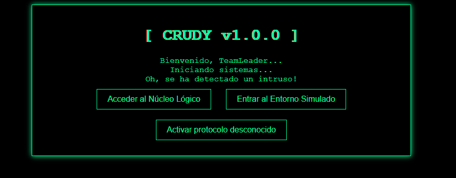

Trabajo hecho en pruebas de CSS para ser introducido en la edición y aplicación efectiva de las clases y organización sobre los Cascading Style Sheets.

Restaurante - Landing Page
Trabajo sobre el modo responsive en una cadena de restaurantes y una página de descuentos hecha en media queries.

Pagina de Eventos - Proyecto en Conjunto
Página realizada en equipo basada en el evento cultural de un barrio donde se contienen páginas adicionales.
Seccion #2

MiniOS
Trabajo basado en un sistema operativo mediante HTML y CSS, hecho completamente en estos sistemas de marcado.

Juego de Supervivencia
Juego basado en decisiones con consecuencias hecho meramente en JavaScript, simulando estadísticas.

CRUDY I.A. Malvada
I.A. Programada en JavaScript para ser un juego de niveles con preguntas.